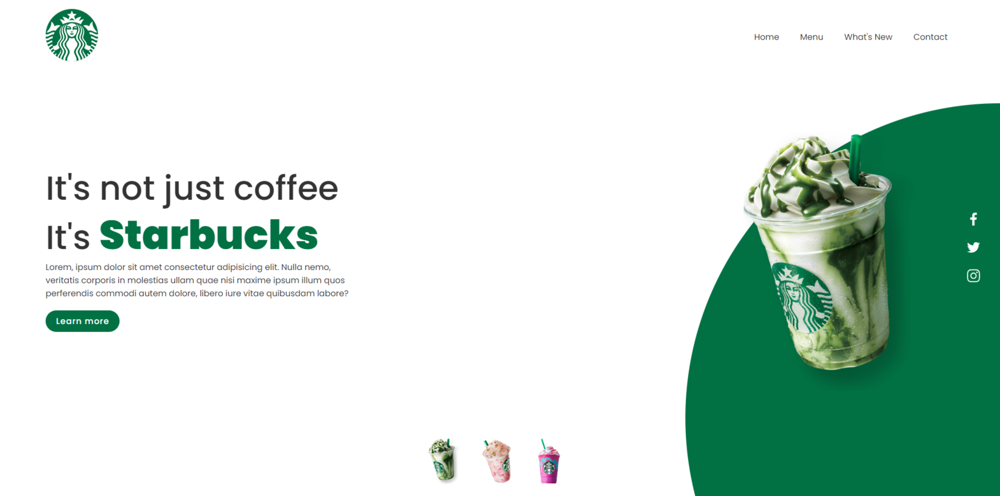
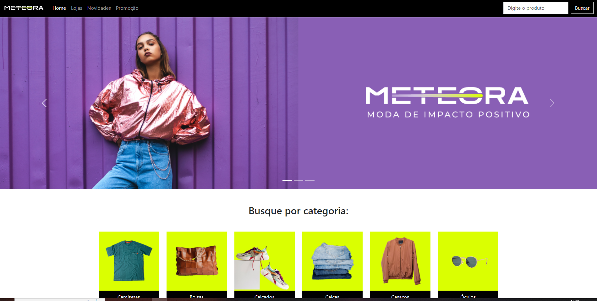

- 
Desenvolvi uma landing page inspirada na marca Starbucks, utilizando HTML, CSS e JavaScript para criar uma experiência interativa. Implementei elementos de design responsivo para garantir uma ótima visualização em diferentes dispositivos.
- 
Desenvolvi uma página fictícia de e-commerce com o intuito de simular uma loja virtual. Esta criação foi pensada para oferecer uma experiência prática e envolvente, reproduzindo os elementos essenciais de uma plataforma de compras online.

Desenvolvi uma página fictícia de inscrição para os cursos da rede "Alura", utilizando HTML, CSS e JavaScript. Esta página foi criada para simular uma experiência real de inscrição em cursos online, demonstrando minha capacidade de criar interfaces web interativas e funcionais.
Desenvolvi uma página de login com HTML, CSS e Javascript. Este projeto demonstra minha capacidade de criar interfaces intuitivas e interativas, incorporando as melhores práticas de design e experiência do usuário.